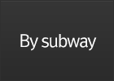

Turn left to the National Theater at the intersection in front of Jangchung Gymnasium
Banyan Tree Club & Spa Seoul
To Yongsan
Turn right after NamSan Tunnel 2
Opposite to the National Theater →Banyan Tree Club & Spa SEOUL
Bus no420, 02, 03, 05
Bus stopIn front of The National Theater (Gungrip Geukjang Ap)

Get off at Dongguk University station in line#3Exit# ⑥ and take NamSan circular bus# 02 or 03 or 05 and get off at The National Theater (Gungrip Geukjang Ap)
Get off at Chungmuro station in line#3 or 4Exit# ②(Daehan Cinema) and take NamSan circular bus# 02 or 050 and get off at The National Theater(Gungrip Geukjang Ap)
Get off at Dongdaemun History & Culture park station in line#2 or 4 or 5Exit# ⑧ and take bus# 420 (blue bus) and get off at The National Theater (Gungrip Geukjang Ap)
Get off at Hangangjin station in line#6Exit# ② and take NamSan circular bus# 03 and get off at The National Theater (Gungrip Geukjang Ap)